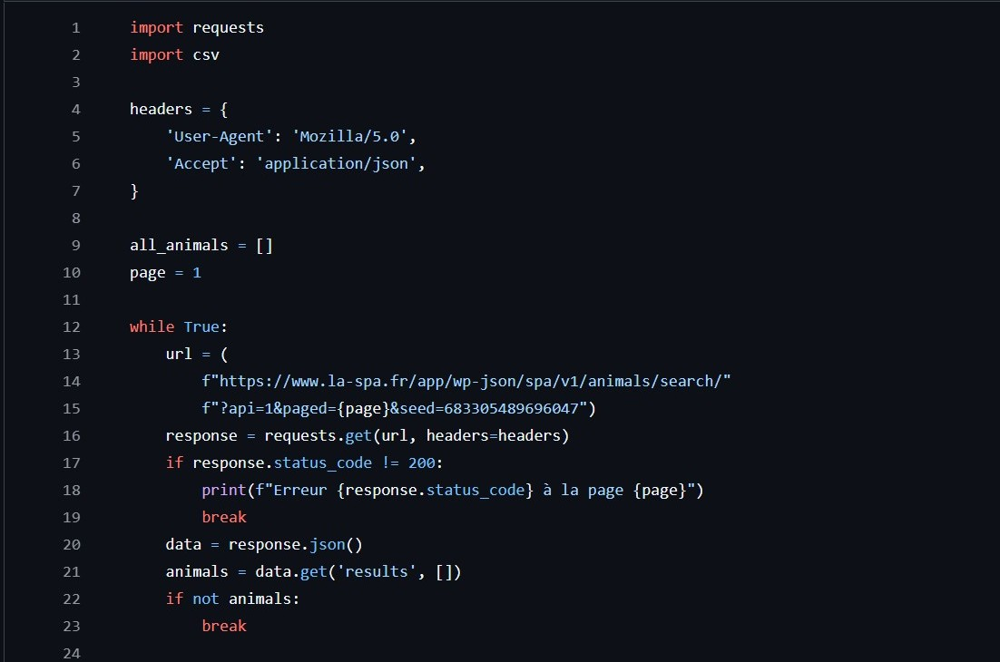
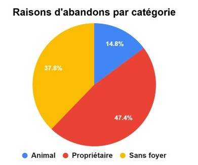

SPA : Vers une adoption responsable
Description brève
Dans ce projet d'équipe à Eugenia School, nous avons cherché à comprendre pourquoi tant d'animaux sont abandonnés. Pour cela, nous avons récupéré et analysé les données réelles du site de la SPA.
Stack technique
Objectifs
Identifier les vraies raisons des abandons, identifier les animaux les plus concernés et proposer une solution.
Impact et Résultats obtenus
Récupération des données
J'ai extrait et organisé plus de 0 informations grâce au web scraping. J'ai ensuite nettoyé ces données pour qu'elles soient exploitables (correction des dates, types d'animaux, etc).

Ce que les chiffres nous disent
L'analyse montre que la raison principale est le manque de temps ou l'incompatibilité entre le maître et l'animal (0,0 % des cas sont liés au propriétaire).

Création de la solution
Solution : Aider les gens à adopter de manière plus responsable. J'ai imaginé un questionnaire de compatibilité. Il aide les futurs adoptants à vérifier si leur mode de vie colle bien avec les besoins de l'animal (entretien, sorties, budget).
Présentation orale
Enfin j'ai présenté les résultats et les graphiques devant un jury et 0 étudiants pour expliquer les conclusions.
Aperçu de la solution
Le questionnaire web aide les futurs adoptants à évaluer leur compatibilite avec un animal avant l'adoption. Cette étape limite les adoptions impulsives et favorise des placements plus durables.